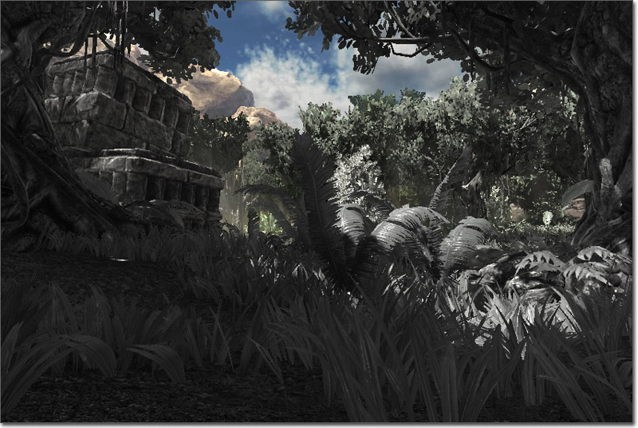
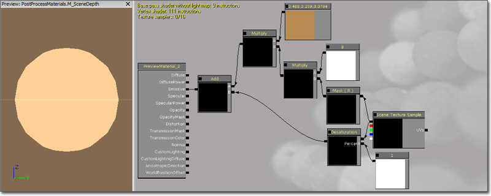
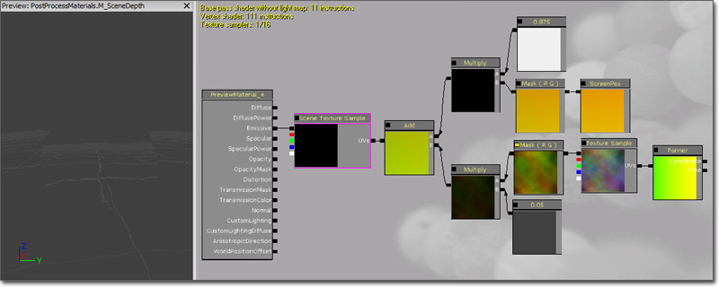
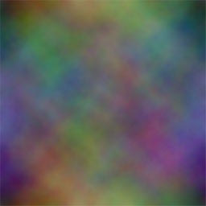
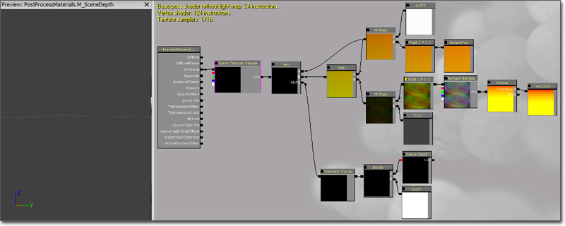

UDN
Search public documentation:
PostProcessMaterialsCH
English Translation
日本語訳
한국어
Interested in the Unreal Engine?
Visit the Unreal Technology site.
Looking for jobs and company info?
Check out the Epic games site.
Questions about support via UDN?
Contact the UDN Staff
日本語訳
한국어
Interested in the Unreal Engine?
Visit the Unreal Technology site.
Looking for jobs and company info?
Check out the Epic games site.
Questions about support via UDN?
Contact the UDN Staff
后期材质特效
概述
MaterialEffect
材质
在 MaterialEffect 中引用的 Material（材质）通常会对当前渲染的场景进行采样，然后使用某种方法修改它，通过它 Emissive（自发光）通道传递结果。在后期中使用的材质必须使用 MLM_Unlit Lighting Model ，要采样场景贴图或场景深度，这个材质必须使用一个透明的 Blend Mode （半透明、添加型、调制、AlphaComposite）。深度组
Scene DPG 主要针对的是将会供材质特效采样的缓存。大多数材质特效将使用 SDPG_PostProcess 组，但是任何使用 SceneDepth（景深）模块的特效可能会使用 SDPG_World 组。添加一个材质特效
在后期编辑器中的工作区上右击将会允许您添加一个 MaterialEffect 节点。创建 Scene（场景）节点或任何其他现有节点与 MaterialEffect 节点输入之间的连接会将这个 MaterialEffect 添加到链中。 选择 MaterialEffect 节点将会显示它的属性。要将一个材质赋给 MaterialEffect 节点的 Material（材质）属性，首次在内容浏览器中选择这个材质。然后，按下材质属性的 按钮，赋予所选的材质。
要在后期链和场景上看到这个新 MaterialEffect 的特效，必须将添加了 PostProcessChain 的 MaterialEffect 设置为默认后期处理。这个操作可以在 DefaultEngine.ini 中使用 DefaultPostProcessName 属性完成。
按钮，赋予所选的材质。
要在后期链和场景上看到这个新 MaterialEffect 的特效，必须将添加了 PostProcessChain 的 MaterialEffect 设置为默认后期处理。这个操作可以在 DefaultEngine.ini 中使用 DefaultPostProcessName 属性完成。
[Engine.SeekFree] DefaultPostProcessName=EngineMaterials.DefaultScenePostProcess [UnrealEd.UnrealEdEngine] DefaultPostProcessName=EngineMaterials.DefaultScenePostProcess要在编辑器中预览效果，需要勾选 MaterialEffect 节点的 Show In Editor（在显示器中显示） 属性，同时必须在透视视窗中启用 PostProcessEffect 的标志。
SceneTexture 表达式

最基本的应用是将 RGB 的输出端连接到着色器的自发光输入端。 如果在后期处理系统中应用这个示例，将不会产生视觉效果，因为它仅仅是渲染场景，不会对结果做任何额外的工作。SceneTextureSample 有一个 Coordinate(坐标)输入端，它也和 TextureSample 上的 Coordinate(坐标)一样。可以使用这个 UV 输入端来改变 UV 的平铺和偏移情况。 注意： SceneTexture 不能在材质编辑器中正确地渲染场景，您必须在后期处理系统中应用它来查看效果。SceneDepth 表达式
 大多数情况下，使用 SceneDepth 表达式需要进行额外的数学计算来执行缩放及偏移深度，从而获得所需要的值的范围。例如，使用一个值分割 SceneDepth (SceneDepth / 1024) 将会提供一个从 0 到 1 的单位化距离值代表从 0 到 1024 的深度。将这个值限定在 [0,1] 范围内将会允许它制作出很多效果，例如，上面显示的将深度映射为灰度值的示例。
大多数情况下，使用 SceneDepth 表达式需要进行额外的数学计算来执行缩放及偏移深度，从而获得所需要的值的范围。例如，使用一个值分割 SceneDepth (SceneDepth / 1024) 将会提供一个从 0 到 1 的单位化距离值代表从 0 到 1024 的深度。将这个值限定在 [0,1] 范围内将会允许它制作出很多效果，例如，上面显示的将深度映射为灰度值的示例。
材质示例
场景着色
 该示例显示了重新对场景进行着色营造出一个棕褐色色调的效果。
(Click for full size)
该示例显示了重新对场景进行着色营造出一个棕褐色色调的效果。
(Click for full size)

首先，添加一个 SceneTexture 表达式，然后传递一个 Desaturation 表达式冲淡场景的颜色。 添加 ComponentMask 将场景颜色的 R 通道隔离出来，然后与值为 8 的 Constant（常量）相乘。 将这个值与值为 (0.4875, 0.2588, 0.0784) 的 Constant3Vector 相乘，这个值代表棕褐色的‘污点’。 然后再使用 Add 表达式将这个结果与已经降低饱和度的版本的场景相结合来再次引入场景的另一个元素（非红色）。 将它的最终结果链接到 Emissive 输入通道。变形
这个示例主要说明的是修改 SceneTexture 的 UV 贴图坐标创建一个热或水变形效果。 (Click for full size)
在这里使用的基本准则是向这个 ScreenPosition UV 贴图中添加一个平移的 TextureSample 的 R 和 G 通道来使它们变形。首先，添加一个 U 和 V 平铺显示分别为 2.0 和 2.0 的 TextureCoordinate 表达式。将 TextureCoordinate 的输出连接到 X 和 Y 速度分别为 0.0 和 0.375 的 Panner（平移器）的 Coordinate 输入。将这个平移器的输出连接到 Texture 为彩虹云图片（如下所示）的 TextureSample 的 UV 输入端。将这个 TextureSample 的 RGB 输出传递到 ComponentMask 隔离出 R 和 G 通道。将这个 ComponentMask 的输出与值为 0.05 的 Constant（常量）相乘减少变形量。
将 Screen Align 为 True 的 ScreenPosition 表达式传递给 ComponentMask 隔离出 R 和 G 通道作为主要 UV 贴图坐标使用。将 ComponentMask 的输出与值为 0.975 的 Constant（常量）相乘稍稍拉伸超过视窗边界的场景。在应用变形的时候必需使场景的边缘没那么明显。 然后使用 Add 表达式将上面每个网络末尾的两个乘法表达式的输出结合在一起。将最终值连接到 SceneTexture 表达式的 UV 输入。最后，将 SceneTexture 的 RGB 输出连接到这个材质的 Emissive（自发光）输入通道。深度蒙板
这个示例主要说明了使用 SceneDepth 作为一个蒙板插入法线 SceneTexture 输出和上面生成的变形效果之间。 (Click for full size)
要了解这里提到的变形网络的设置，请参阅上面的Distortion（变形）部分。 添加一个 SceneDepth 表达式，然后使用值为 5120 的 Constant 分割它的输入将这个值单位化到一个可使用的范围。将 Divide（除法）表达式的输出传递给一个最小值和最大值分别为 0.125 和 1.0 的 ConstantClamp 表达式。将这个限定值连接到 LinearInterpolate 表达式的 Alpha 输入。 将变形网络的 ScreenPosition 部分中 Multiply（乘法）节点的输出连接到 LinearInterpolate 表达式的 A 输入端。它代表的是要在查看靠近相机的对象时使用的未经修改的 UV 贴图坐标。 将变形网络中的 Add（加法）表达式的输出连接到 LinearInterpolate 表达式的 B 输入端。它代表的是在查看远处对象时使用的已经修改或已经变形的 UV 贴图坐标。 将 LinearInterpolate 表达式的输出连接到 SceneTexture 表达式的 UV 输入，其中 RGB 稍后会被连接到该材质的 Emissive 输入通道。